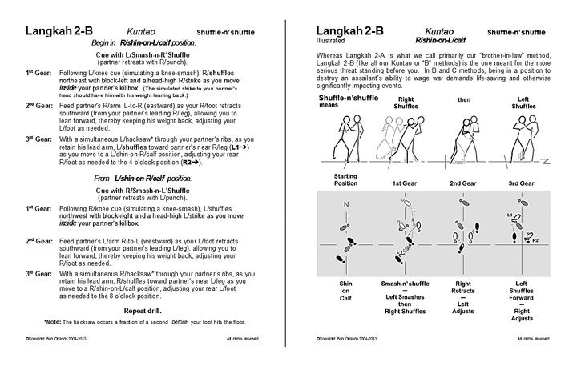

|
Below are two sample pages taken from the 93-page "Fighting Footwork of Kuntao and Silat Workbook."
This workbook is written primarily as a companion to our video, The Fighting Footwork of Kuntao and
Silat. Paladin Press has published this as an e-book with each drill described on a single page, a
"sticks-n'feet" illustration for each drill, as well as langkah applications or examples. The published
e-book also has video clips of each application.
Publication of such a workbook with the drill text pages, sticks-n'feet illustrations, drill applications, and other helpful learning tools assumes the reader has the Fighting Footwork video or that he is at least is familiar with what the video shares. As good as video instruction can be, it still has a major shortcoming: During practice without a DVD player, it is difficult for the student to follow the instruction presented via that media. And even if the student has a laptop from which he can view a given training video, locating the desired part for practice is not always quick or easy — especially from a four-disc set. That said, in this workbook we actually cover a few details not addressed in the video — like how to protect your knees when having to use that extremely effective legwork smash. It is our hope that this workbook actually makes it easier to practice and study the drills presented in our The Fighting Footwork of Kuntao and Silat video. |
|  |
|
No part of this document may be reproduced without the express written permission of Bob Orlando. |
|
©Copyright Bob Orlando, 2004-2014 All rights reserved |
http://www.OrlandoKuntao.com
E-mail: Bob@OrlandoKuntao.com |
Last update:
Jan. 5, 2014 by Bob Orlando |